1. Initial Concept: Controlling Digital Flames with Real-World Gestures
I wanted to explore how to use ml5.js's gesture recognition to translate real-world body movements into visual feedback on the screen. My initial idea was to create a "flame generated by the palm of the hand" visual effect, as a simple interactive art prototype, establishing a direct correspondence between real-world actions and digital flames.

2. First Prototype: Implementing Basic Gesture Tracking with Handpose
I first built a basic structure using p5.js and ml5.handpose to achieve real-time tracking of the thumb and index finger. This version successfully implemented gesture recognition, but only with simple dot visualization, serving as a starting point for interaction detection. The focus at this stage was on verifying the stability of the gesture data and whether the latency was acceptable.
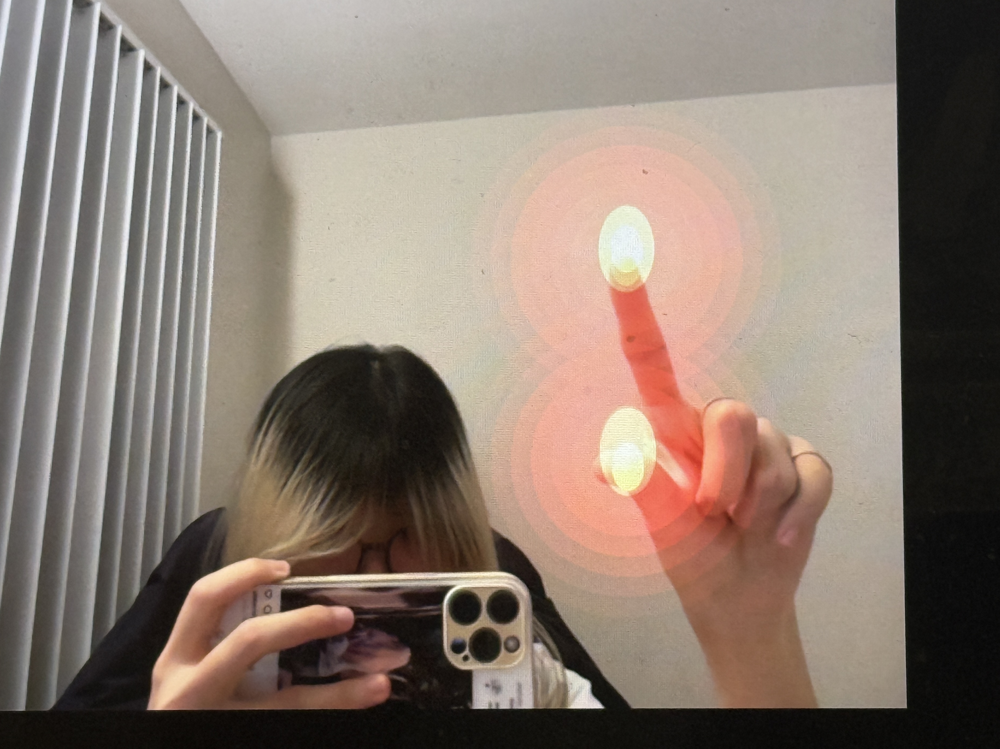3. Adding Flame Visuals: Creating a Low-Latency Glowing Flame Effect
After reliably obtaining the keypoint data, I replaced the dots with custom-made "glowing flame" graphics, using p5.js's blendMode(ADD) and multiple layers of ellipses to achieve the glow effect of the flames. I experimented with various colors, including blue, pinkish-purple, and cyberpunk-style effects, but found that some particle effects caused latency, so I opted for a lightweight flame rendering solution.
 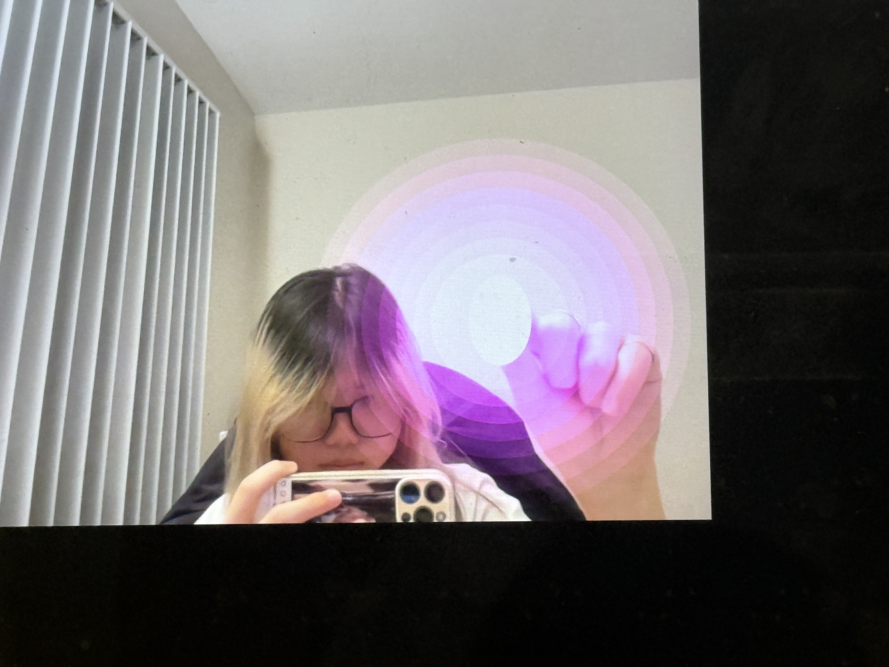
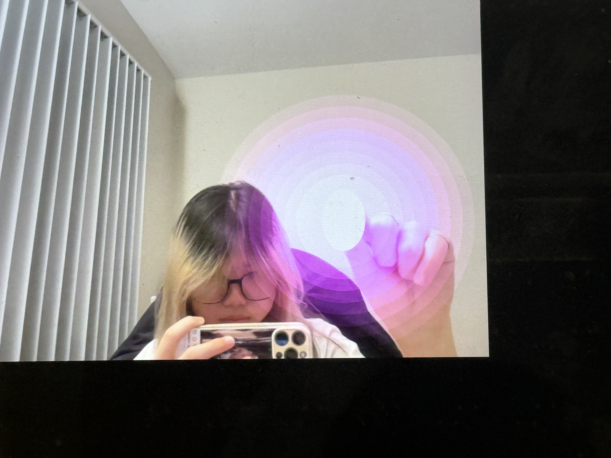
4. Iterative Experience: Fine-tuning Color, Style, and Effect Stability
As I adjusted the visual effects, I explored different styles (cyber blue, pink and purple neon, realistic orange flames). To reduce latency, I decreased the number of particles, allowing the flames to maintain a breathing, flickering effect without excessive computation. This stage also involved testing more complex interactions such as gesture merging and energy balls, but these were ultimately not adopted due to performance issues.

5. Key Problem: Flame Position Offset Caused by Mirroring Logic
When trying to make the flame appear on the hand, I encountered an alignment problem between the mirrored video feed and the non-mirrored hand gestures. After mirroring the camera feed, the hand gesture coordinates remained in their original direction, causing the flame to appear in the opposite direction. The solution was to mirror the video feed, but then manually mirror the hand gesture coordinates once (x = width - x). This step was the key technical aspect of the entire project, ensuring that the flame perfectly overlapped with the hand in the mirrored image.
 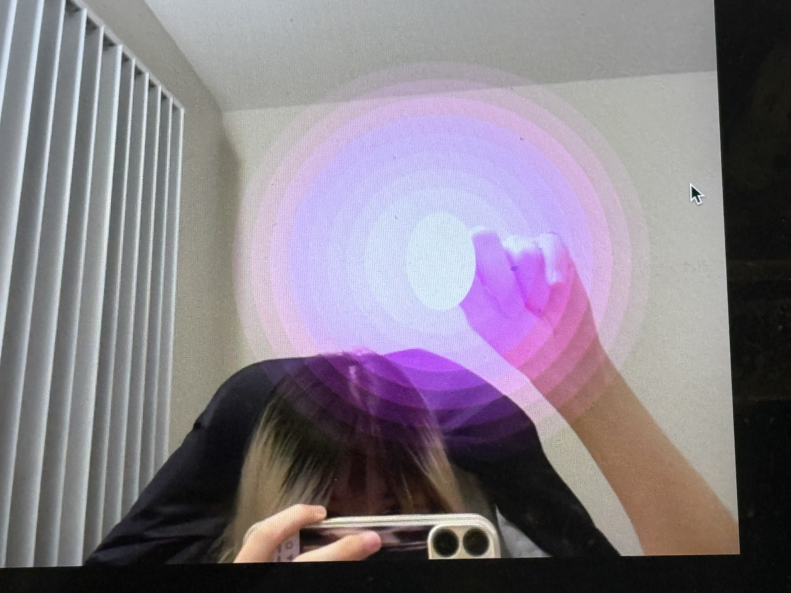
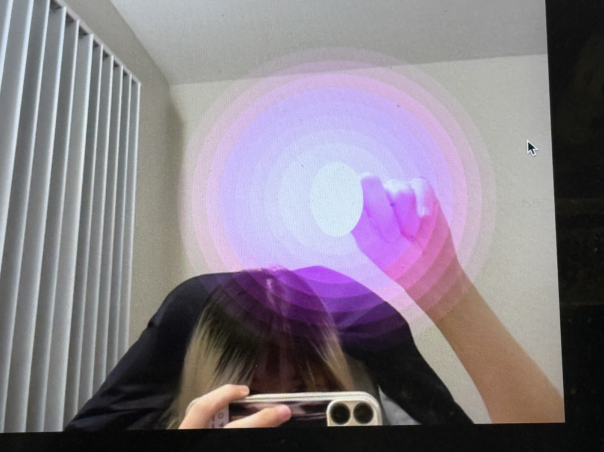
6. Gradually building gesture tracking and flame visualization
Using p5.js + ml5.js handpose, the first version of the gesture detection prototype was created, successfully obtaining the position data of the thumb and index finger.
The simple dots were replaced with flame visualization, using multiple layers of ellipses + ADD blending mode to create a glowing effect, and adjusted to a red or cyber-purple visual style.
Experiments were conducted on gesture merging (two fingers close together → glowing fireball) and different color styles, and the flame drawing structure was optimized to reduce latency.
7. Revise the mirroring logic and integrate it into the final version.
In the final version, the interactive flame effect combines hand gesture recognition and real-time image mirroring, further enhancing the visual presentation through a particle system. The gesture model accurately captures the dynamic positions of the thumb and index finger by analyzing the unmirrored video stream, and then manually maps them back to the image the user sees, achieving an intuitive and natural interaction method. The flame itself uses additive blending to draw multiple layers of translucent halos, giving the flame a realistic sense of light diffusion; at the same time, the particle system continuously generates scattering particles around the flame, simulating energy evaporation and air turbulence. When the distance between the two fingers shortens, the program calculates and triggers the flame's fusion logic (gesture-based state switching) in real time, merging the two small flames visually and in terms of particle effects into a brighter, stronger energy core, creating a natural "energy convergence" interaction effect.


code
 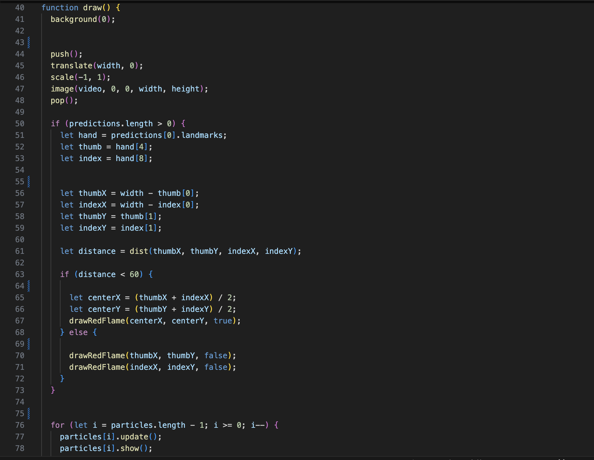 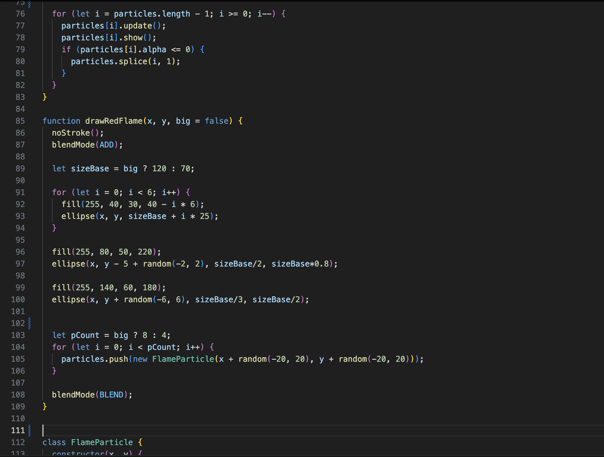 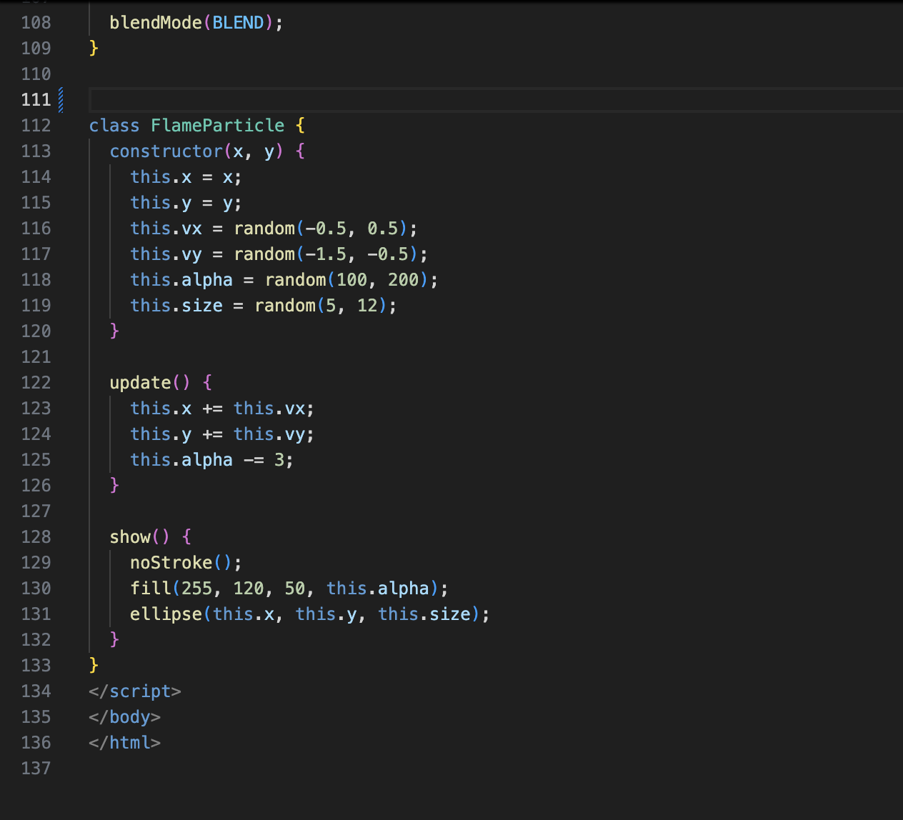 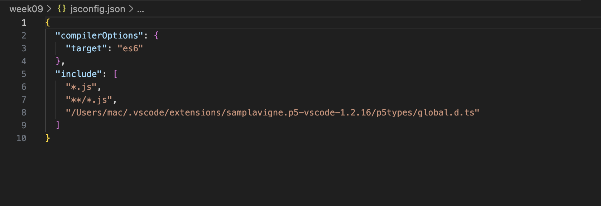
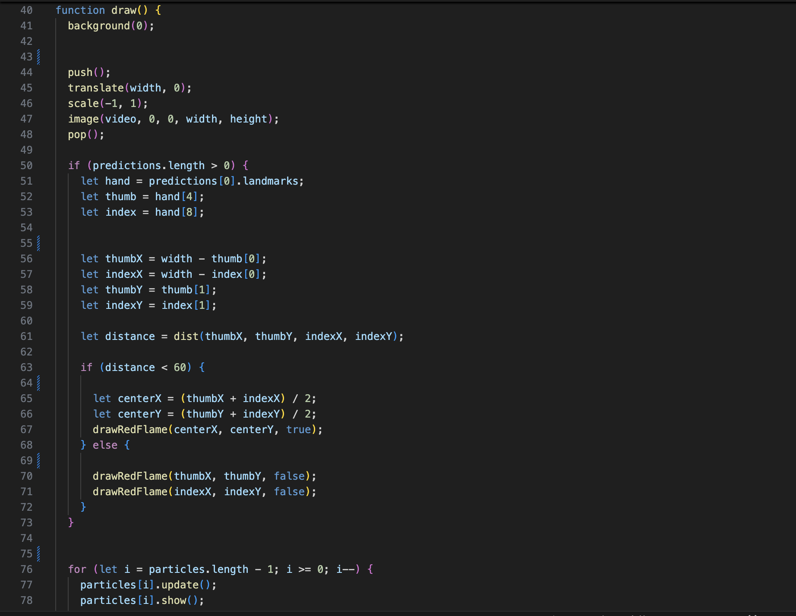 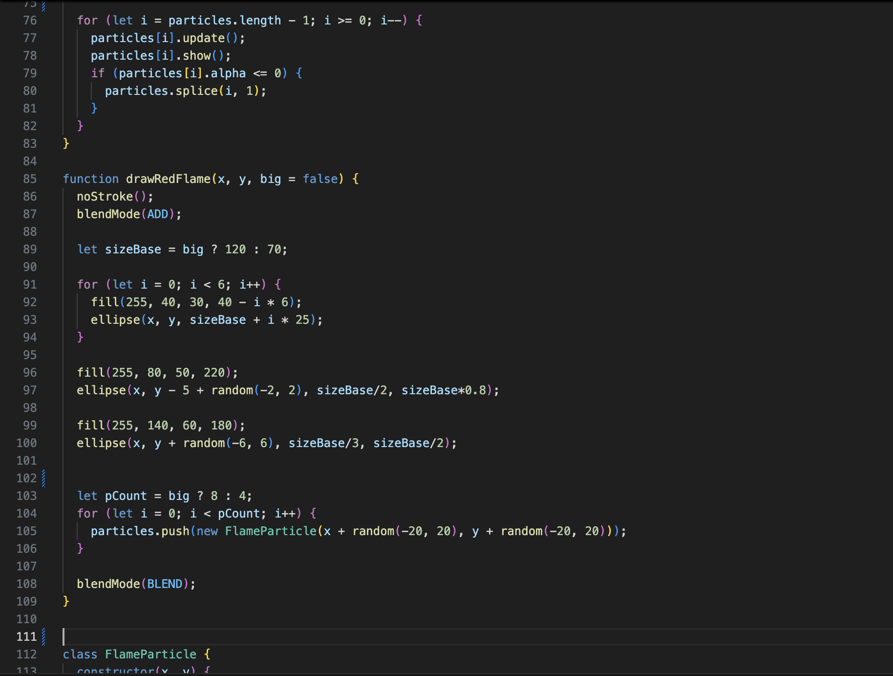 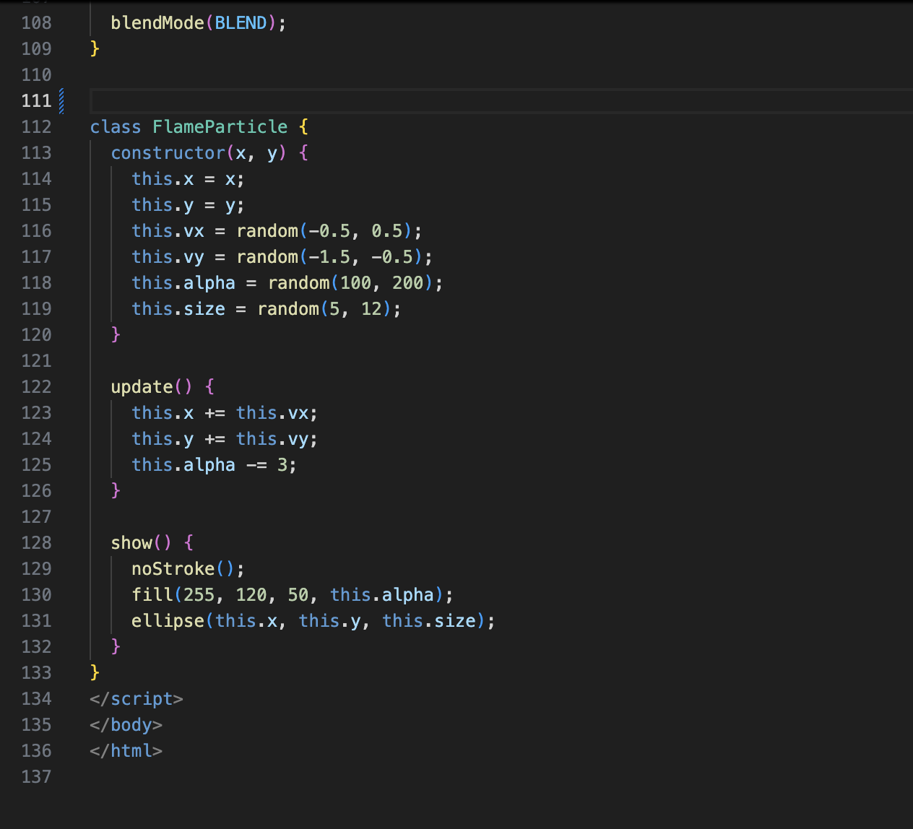 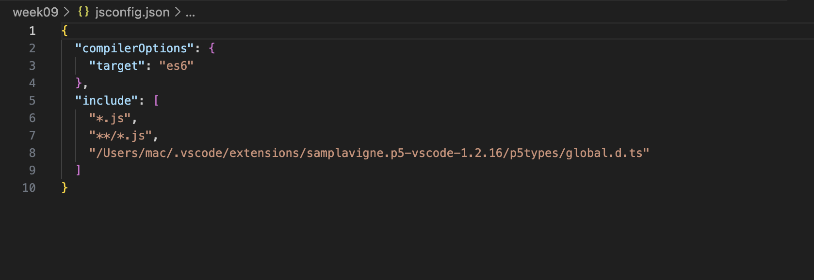